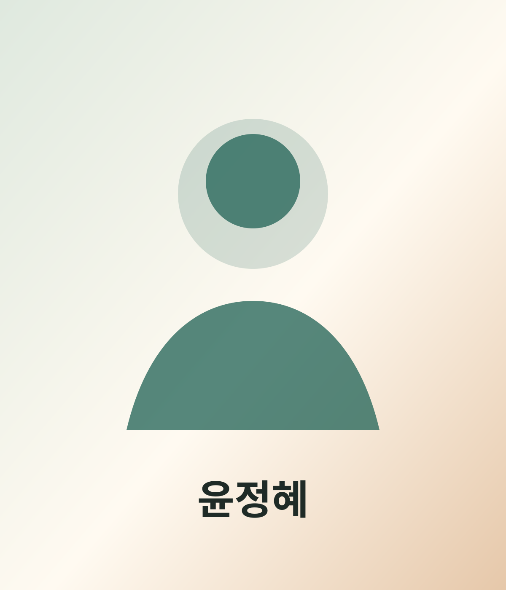

정부지원사업, 공모사업, 신규사업 기획을 위한 사업계획서 작성과 비즈니스모델 고도화를 지원합니다.

Digital Profile · AI Business Consulting
윤 정 혜
대표 · ㈜이노밸류
현장경험과 AI를 결합해 기업의 가능성을 발견하고, 지속가능한 성장과 사회적 가치를 설계합니다.
AI 사업계획서
비즈니스모델
사회적경제기업
소상공인 컨설팅
ESG·마케팅 전략
Profile
현장과 기술을 연결하는 성장전략 파트너
소상공인, 중소기업, 사회적경제기업이 각자의 현장에서 실행 가능한 전략을 찾도록 돕습니다. 사업계획서, 공모사업, 신규사업, 마케팅, 판로개척, ESG 전략까지 조직의 현재와 다음 단계를 함께 설계합니다.
Expertise
핵심 역량
아래 항목을 눌러 윤정혜 대표의 컨설팅 역량을 확인하세요.
생성형 AI와 프롬프트 엔지니어링을 활용해 사업계획, 마케팅 전략, 경영 의사결정의 실행력을 높입니다.
경영진단, 판로확대, 점포환경개선, 재창업·사업정리, 상권·입지분석 등 사업 운영 전반을 지원합니다.
사회적기업, 마을기업, 협동조합, 자활기업의 창업·운영·성장전략과 사회적가치 기반 사업모델을 설계합니다.
공공구매, 민간판로, SNS 활용, 브랜드 방향성 정립 등 시장 확장을 위한 실행전략을 수립합니다.
ESG 경영전략, 사회적가치 측정, 소셜미션 구체화, 지속가능한 조직 운영전략을 지원합니다.
Work
현재 하는 일과 활동 분야
㈜이노밸류 대표
소상공인·중소기업·사회적경제기업 대상 경영컨설팅을 수행합니다.
정부지원사업·공모사업 컨설팅
사업계획서 작성, 공모사업 전략, 신규사업 기획을 실무 중심으로 정리합니다.
AI 활용 사업계획서 작성
프롬프트 기반 컨설팅으로 기획과 실행 문서의 완성도를 높입니다.
비즈니스모델·마케팅·판로개척
시장 진입, 브랜드 방향성, 공공구매와 민간판로 확대 전략을 수립합니다.
사회적경제기업 설립·성장
사회적기업, 마을기업, 협동조합의 설립과 지속가능한 성장전략을 돕습니다.
소상공인 재기지원 컨설팅
재창업, 사업정리, 희망리턴패키지 등 현실적인 재기 과정을 함께 설계합니다.
Focus
경력과 실행 영역
-
01
경영진단과 사업 운영 개선
현장 문제를 구조화하고, 실행 가능한 개선 과제를 도출합니다.
-
02
공모사업·정부지원사업 실행 지원
지원사업의 요구사항을 사업모델과 연결해 설득력 있는 문서와 전략으로 정리합니다.
-
03
ESG·사회적가치 기반 성장 설계
소셜미션, 사회적가치 측정, 지속가능한 조직 운영 전략을 함께 만듭니다.
Contact
함께 성장의 다음 단계를 설계해보세요.
사업계획, AI 활용, 사회적경제, 소상공인 컨설팅, ESG 전략이 필요하다면 편하게 프로필을 저장해두세요.